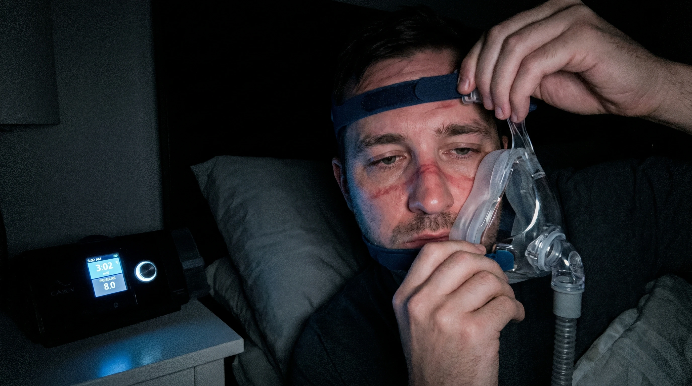
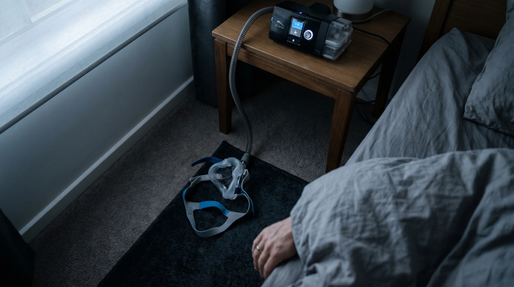
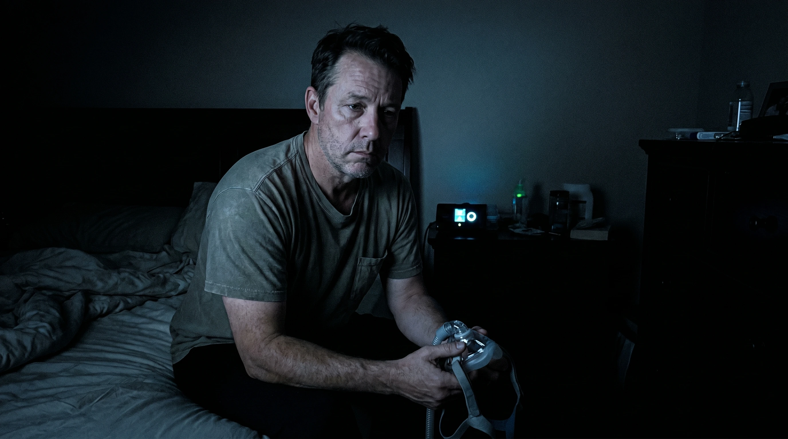
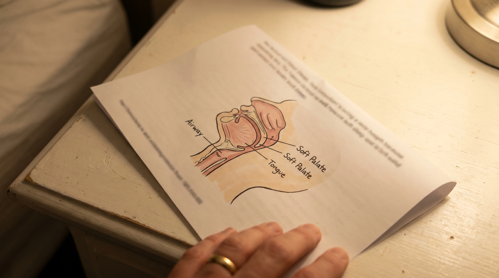
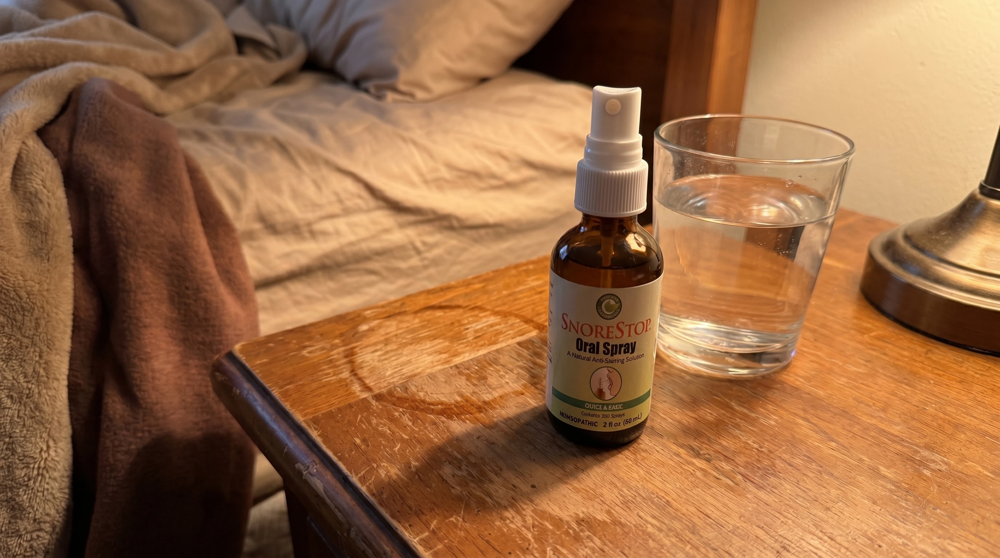
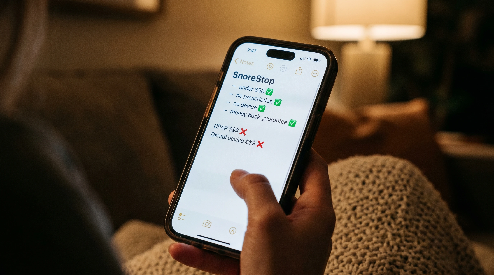
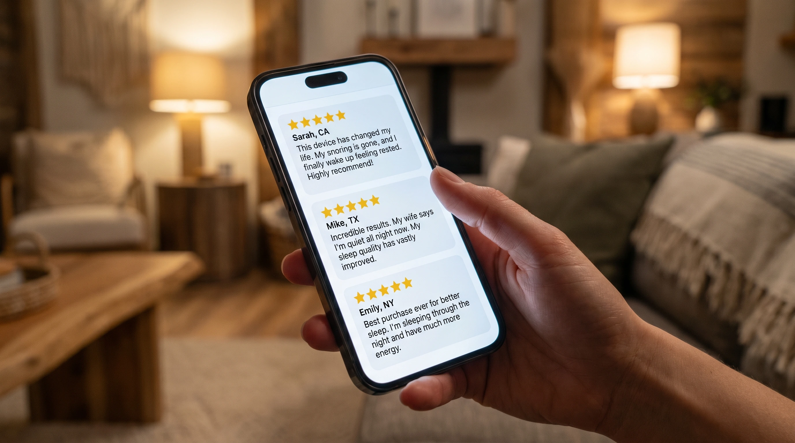
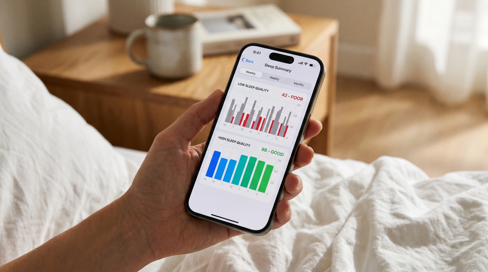

My snoring had gotten bad enough that my wife had moved to the spare room.
Not as a statement. Not after a fight. Just quietly, practically, because she had a job and needed to sleep and lying next to me had stopped being compatible with that. She'd mentioned it for years before it got to that point and I'd done the strips and the positional pillow and the chin strap and none of it had made enough difference to matter.
So she moved rooms and I told myself I'd do something about it and then didn't for eight more months until my doctor did a sleep study and confirmed what she'd been trying to tell me for years and sent me home with a CPAP machine and an instruction booklet and the confident expectation that this was going to fix everything.
Six weeks later I was more exhausted than I had been before I started and I was lying awake at 3am in the dark pulling the mask off my face for the fourth night running thinking about whether this was just what the rest of my life looked like now.
It isn't. What I found after those six weeks is in what I wrote below and I want you to read it before you spend six weeks where I spent mine.
The machine
I want to tell you what sleeping with a CPAP actually feels like because nobody told me and I think if someone had I might have gone looking for alternatives sooner.
The mask covers your nose and mouth. Straps wrap around the back of your head and over the top. A hose connects the mask to the machine on your nightstand which runs all night pushing pressurized air continuously into your airway whether you are inhaling or exhaling. The machine has a humidifier tank you fill every night and clean every week. It has a carrying case for travel. It has a display that tracks your usage and generates a report you can view on an app.
It is a significant piece of medical equipment that you strap to your face in the dark every night before you try to sleep.
The first night I put it on I lasted forty minutes before I took it off.
Not because I wasn't trying. Because there is something that happens to you when something airtight is strapped across your face in a dark room and you try to tell your brain to relax and go to sleep. Your brain does not relax. Your brain starts looking for the exits.

Six weeks of trying
I gave it everything I had because I am not someone who gives up on things easily and because my wife was in the other room and I needed this to work.
I tried different masks. The full face mask, the nasal pillow, the hybrid. I tried adjusting the pressure settings. I tried the heated humidifier on different levels. I tried chin straps to stop my mouth falling open. I tried sleeping on my side exclusively. I tried going to bed later so I'd be tired enough that the claustrophobia wouldn't win.
Some nights I made it three hours. Some nights I made it four. The record was one full night somewhere around week four that I was so proud of I told my wife about it over breakfast like I'd run a marathon.
The other nights I woke up at 2am or 3am with the mask half off my face, pulled loose by hands that knew before I did that this wasn't going to work. Red pressure marks across my cheeks and nose that were still visible at noon. A mouth so dry every morning it felt like I'd slept with a hairdryer pointed at my face. A low-level claustrophobia that started building every evening around 9pm when I knew bedtime was coming and I was going to have to put the thing on again.
My wife asked me at the end of week five how it was going. I said fine. That was the most dishonest fine I had ever said and I had been saying it about the snoring for years.
"Every evening around 9pm the claustrophobia would start building because I knew bedtime was coming and I was going to have to strap the machine to my face again. This was supposed to be the fix."
The part I've never said out loud
Nobody tells you that the cure can feel worse than the condition.
Nobody tells you that you can do everything right, follow every instruction, try every variation, give it the full recommended adjustment period, and still lie there at 3am in the dark feeling like you are sleeping in a cage wondering if this is just what the rest of your life looks like now.
My wife had moved rooms because of my snoring. I understood that. I had accepted the machine because I understood the alternative was continuing to do nothing while she slept in a different room and something quietly built in my body every night. I was trying. I was genuinely trying.
But somewhere around week five I started doing the math on what indefinite CPAP compliance actually looked like. Every night for the rest of my life. The mask, the hose, the machine, the humidifier, the cleaning, the travel case, the pressure adjustments, lying there every night in the dark waiting for the claustrophobia to lose. The version of my future that contained all of that did not look like a version I wanted.
I started looking for something else not because I gave up on fixing the snoring. Because I couldn't look at that version of the future and accept it without first knowing whether another option existed.

What I found
I went looking with low expectations because I had already been through the process of trying things that didn't work and I was not in a credulous place.
I found SnoreStop throat spray.
My first reaction was skepticism of the specific kind that comes from being a person who has just completed a sleep study, received a medical diagnosis, fought with an insurance company for six weeks, and spent a month and a half trying to sleep with a machine strapped to his face. A spray bottle seemed like an insult after all of that.
I kept reading because the mechanism made sense in a way the other things I had tried had not fully made sense.
The snoring is a throat problem. The sound comes from the soft tissue at the back of the throat partially relaxing during sleep and vibrating as air moves through the restricted airway. When the restriction gets severe enough the airway closes. The breathing stops. The body jolts back. The CPAP works by forcing air through that restricted airway at pressure, keeping it open mechanically. It works. But it does it from the outside, strapped to your face, pushing air in whether your body wants it or not.
SnoreStop works on the tissue itself. The natural formula coats the soft palate and throat, firming the tissue, reducing the vibration, keeping the airway open from the inside so the mechanical intervention from the outside isn't necessary.
Thirty years in pharmacies. Over 250,000 people. No prescription, no machine, no mask, no hose, no humidifier to clean, no insurance battle, no evening claustrophobia building from 9pm. Two seconds before bed.
I ordered it that night. I was furious at how simple it was. I am still a little furious.
Why it actually works when the CPAP couldn't
The CPAP works mechanically. It forces pressurized air through the restricted airway, keeping it open from the outside. For people who can tolerate it long term it is effective. The problem is not the mechanism. The problem is the compliance. Study after study shows that a significant percentage of people prescribed CPAP either stop using it entirely or use it inconsistently because sleeping with a pressurized mask strapped to your face every night is genuinely difficult for a large number of people and no amount of trying harder changes that.
SnoreStop works differently.
The natural formula coats the soft palate and throat directly, temporarily firming the soft tissue, reducing the vibration that creates the snoring sound, helping keep the airway open from the inside. No pressure. No mask. No mechanical intervention from outside the body. The airway stays open because the tissue has been treated, not because something is forcing air through it.
Two seconds before bed. That is the entire compliance requirement.
Thirty years in pharmacies. Over 250,000 people. Not new. Not experimental. A product that has existed since 1995 and continued to exist because it works consistently enough that people keep using it.


| Option | Cost | What it involves |
|---|---|---|
| Sleep study + CPAP | $1,000–$3,500 | Machine, mask, hose, nightly setup, cleaning |
| Dental MAD device | $1,500–$4,500 | Custom fitting, multiple appointments, adjustment period |
| Surgical options | $4,000–$6,000+ | Recovery time, risk, no guarantee |
| SnoreStop throat spray | Under $50 | Two seconds before bed |

"My husband's CPAP was sitting unused for three months. His doctor wasn't happy. Found this after a lot of searching. Eight months later the machine is in a box in the closet and he uses this every night. Two seconds. That's it."
"I was the guy who couldn't tolerate the CPAP no matter how hard I tried. Six weeks of red marks on my face every morning. Found this almost by accident. First night without the machine in two months I slept through. I was genuinely angry at how simple it was."
"Three sleep studies, two devices, one machine I couldn't tolerate. Found this almost by accident. Four months in and my husband sleeps through the night and so do I. I'm genuinely angry it took us this long."

Seven months later
She's back in our room.
That's the sentence. That's the whole thing.
Seven months ago she was in the spare room because my snoring had made sharing a bed incompatible with her being able to function at work. Six weeks of the CPAP hadn't changed that. What changed it was something that took two seconds before bed and cost less than one month of CPAP supplies.
She came back the third week. She didn't make an announcement. She just appeared in the doorway one evening with her pillow and got into bed and turned the light off and went to sleep. I lay there for a moment processing what had just happened and then I turned the light off too.
We haven't talked about the snoring much since. Not because it's a difficult subject. Because there isn't anything left to say about it. It stopped being a thing we lived around and became a thing that used to be a problem and isn't anymore and neither of us needs to examine it further than that.
The CPAP is in a box in the closet. I haven't opened it in seven months. I don't intend to.

The part that made me pull the trigger
When I found SnoreStop I was skeptical enough that I almost didn't order it.
What made me order it was the guarantee.
Thirty days. Full refund. No questions, no justification, no process. You try it for thirty days and if the snoring doesn't improve you get every dollar back.
After six weeks of the CPAP I had already lost enough sleep and enough dignity that fifty dollars and thirty days was not a meaningful ask. There were only two outcomes. Either it works and she comes back to our room and the machine goes in a box. Or it doesn't work and it costs nothing and I am exactly where I was before.
There is no version of that math that goes wrong. I ordered it before I could find a reason not to.
🟢 The SnoreStop 30-Day Guarantee
Try it for a full 30 days. If the snoring doesn't improve contact them for a complete refund. No questions asked. No explanation required. No process to navigate.
Why I'm writing this
I'm writing this because of the spare room.
Because of what it felt like to watch my wife move her pillow out of our bedroom and know that my snoring had done that and six weeks of the best medical solution available hadn't undone it. Because of the 9pm claustrophobia building every evening. Because of the red marks on my face every morning. Because of the version of my future I could see from inside that machine that I did not want to live in.
If you have a CPAP sitting on your nightstand that you are dreading using or have stopped using entirely and haven't told your doctor, you are not alone and you are not someone who failed. You are someone who tried something that is genuinely difficult to tolerate and found it wasn't sustainable.
The alternative exists. It is simple, it is affordable, it has been around for thirty years, and there is a guarantee that means trying it costs you nothing if it doesn't work.
Read what's below. Then put the machine in a box and try the thing that takes two seconds.